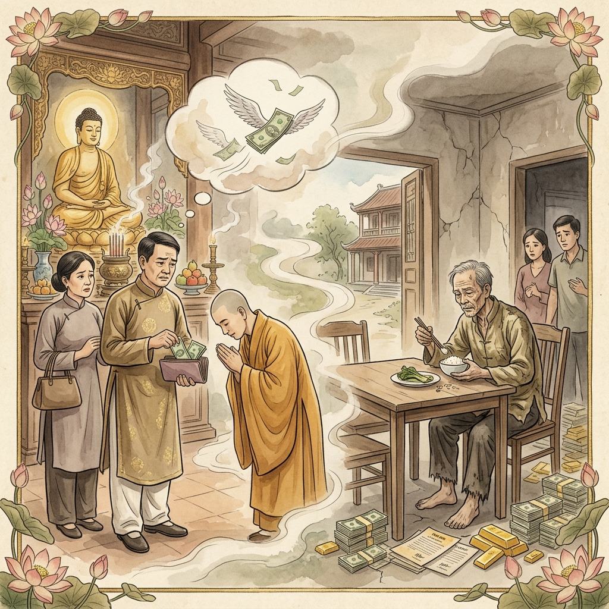
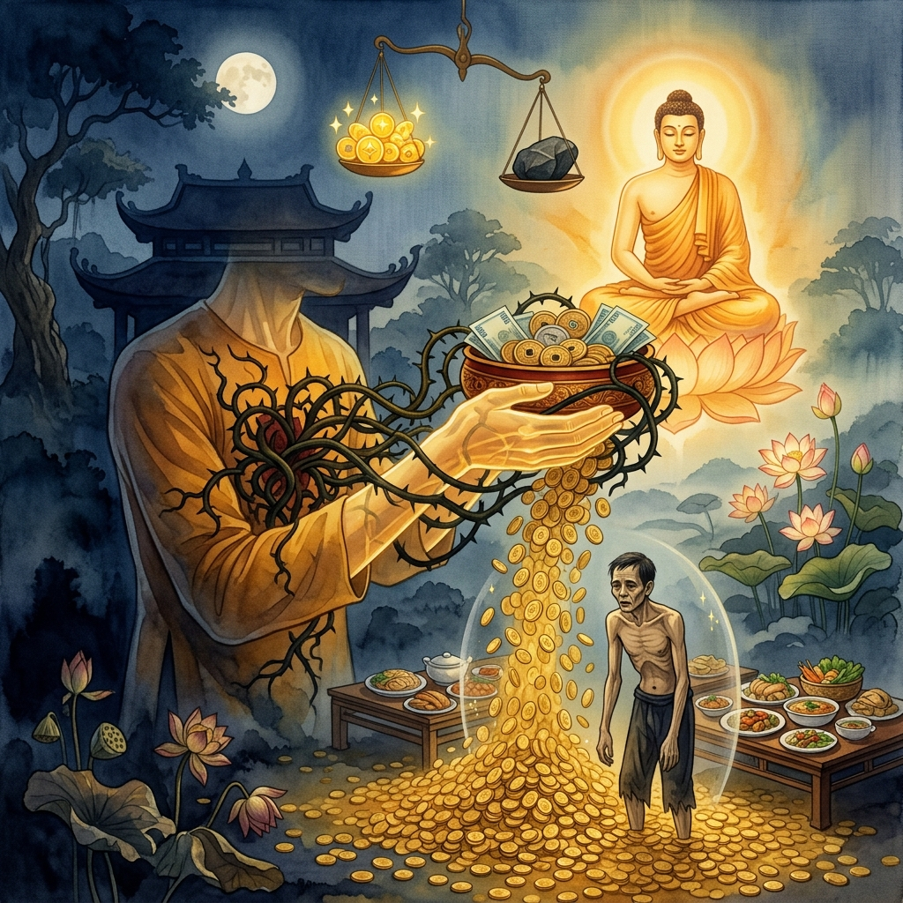
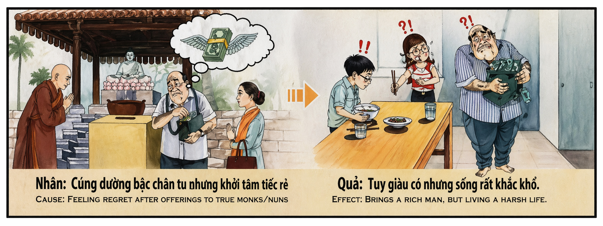

El Oro que No AlimentaThe Gold That Does Not NourishL'Oro che Non Nutre不能果腹的黄金الذهب الذي لا يُشبعЗолото, которое не кормитDas Gold, das Nicht NährtL'Or qui Ne Nourrit Pas満たされぬ黄金O Ouro que Não AlimentaVàng Mà Không No
Quien ofrece a lo sagrado con la mano pero retira el corazón — quien deposita monedas ante el altar y luego, de camino a casa, cuenta mentalmente lo que ha perdido como si hubiera sido robado — está firmando con el universo un contrato envenenado. El karma le concederá la riqueza que tanto ansía, pero le negará para siempre la capacidad de disfrutarla. Será rico como un rey y vivirá como un mendigo, porque la generosidad sin alegría es una semilla plantada en sal: germina retorcida. Whoever offers to the sacred with the hand but withdraws the heart — whoever deposits coins before the altar and then, on the way home, mentally counts what they have lost as though they had been robbed — is signing with the universe a poisoned contract. Karma will grant them the wealth they so crave, but will forever deny them the ability to enjoy it. They will be rich as a king and live as a beggar, for generosity without joy is a seed planted in salt: it sprouts twisted. Chi offre al sacro con la mano ma ritrae il cuore — chi deposita monete davanti all'altare e poi, tornando a casa, conta mentalmente ciò che ha perso come se fosse stato derubato — sta firmando con l'universo un contratto avvelenato. Il karma gli concederà la ricchezza che tanto brama, ma gli negherà per sempre la capacità di goderne. 手向圣物献供却收回了心——在祭坛前放下钱币，回家路上却在心里盘算损失了多少，仿佛被人抢劫——这是在与宇宙签订一份有毒的契约。业力会赐予他渴望的财富，却永远剥夺他享用财富的能力。 من يقدّم للمقدّس بيده لكن يسحب قلبه — من يضع العملات أمام المذبح ثم في طريق عودته يحسب ذهنياً ما خسره كأنه سُرق — يوقّع مع الكون عقداً مسموماً. الكارما ستمنحه الثروة لكن ستحرمه أبداً القدرة على الاستمتاع بها. Кто подносит священному рукой, но отнимает сердце — кто кладёт монеты перед алтарём, а по дороге домой мысленно пересчитывает утраченное, словно его обокрали — подписывает с вселенной отравленный контракт. Карма дарует ему богатство, но навсегда лишит способности наслаждаться им. Wer dem Heiligen mit der Hand gibt, aber das Herz zurückzieht — wer Münzen vor den Altar legt und dann auf dem Heimweg im Geist zählt, was er verloren hat — unterzeichnet mit dem Universum einen vergifteten Vertrag. Das Karma wird ihm den Reichtum gewähren, aber ihm für immer die Fähigkeit versagen, ihn zu genießen. Celui qui offre au sacré de la main mais retire le cœur — qui dépose des pièces devant l'autel puis, sur le chemin du retour, compte mentalement ce qu'il a perdu — signe avec l'univers un contrat empoisonné. Le karma lui accordera la richesse, mais lui refusera à jamais la capacité d'en jouir. 手で聖なるものに捧げながら心を引っ込める者——祭壇の前に硬貨を置き、帰り道でまるで盗まれたかのように失ったものを心の中で数える者——は宇宙と毒された契約を結んでいる。カルマは渇望する富を与えるが、それを享受する能力を永遠に奪う。 Quem oferece ao sagrado com a mão mas retira o coração — quem deposita moedas diante do altar e depois, a caminho de casa, conta mentalmente o que perdeu como se tivesse sido roubado — está a assinar com o universo um contrato envenenado. O karma conceder-lhe-á a riqueza, mas negar-lhe-á para sempre a capacidade de a desfrutar. Kẻ dâng lên điều thiêng bằng tay nhưng rút lại trái tim — đặt tiền trước bàn thờ rồi trên đường về nhẩm đếm đã mất bao nhiêu như thể bị cướp — đang ký với vũ trụ một hợp đồng độc. Nhân quả sẽ ban cho hắn sự giàu có, nhưng vĩnh viễn tước đi khả năng hưởng thụ nó.
Existe una forma de avaricia que se disfraza de generosidad, y esa forma es, para el karma, la más peligrosa de todas. Es el acto de dar arrepintiéndose. El hombre que deposita una ofrenda ante el monje con la mano derecha mientras con la izquierda, invisible, intenta recuperarla. El que sonríe ante el altar pero llora por dentro calculando cuántas cenas habría comprado con ese dinero, cuántos metros de tela, cuántos litros de aceite. Este hombre no está dando: está realizando una inversión amarga, y el universo, que distingue perfectamente entre la ofrenda del corazón y la transacción del miedo, le devolverá exactamente lo que ha firmado: riqueza sin gozo.
El mecanismo kármico es de una precisión cristalina. Quien da con alegría abre un canal entre su alma y la abundancia del cosmos. La energía fluye libremente: lo que sale vuelve multiplicado, y no solo en forma de dinero, sino de salud, serenidad, sueño profundo, apetito sano, capacidad de disfrutar una comida sencilla como si fuera un banquete. Pero quien da con arrepentimiento obstruye ese canal en el exacto momento en que lo abre. Es como cavar un pozo y llenarlo de piedras al mismo tiempo: el agua está ahí, debajo, infinita, pero no puede subir. El karma le concederá la riqueza — porque el acto de dar, incluso contaminado, genera mérito material — pero le negará la capacidad de disfrutarla, porque el arrepentimiento convierte cada centavo ganado en un centavo atrapado detrás de un cristal: visible, poseído, pero intocable.
Las tradiciones budistas llaman a este estado «hambre del fantasma hambriento»: el preta, un ser con un vientre enorme y una garganta del tamaño de una aguja. Puede ver la comida, puede olerla, puede incluso comprarla — pero nunca puede tragarla. El rico tacaño que se arrepintió de su ofrenda sagrada renace kármicamente como un preta viviente: posee todo y no disfruta nada. Sus cuentas bancarias están llenas, pero su mesa está vacía. Podría comprarse un palacio, pero vive en una habitación fría. Podría vestir seda, pero usa harapos. La riqueza le rodea como un halo de oro que no calienta, y cada noche, al acostarse sobre un colchón fino que podría reemplazar pero no reemplaza, siente la misma punzada que sintió el día en que se arrepintió de haber dado: la sensación de que algo le fue robado — sin comprender que el ladrón fue él mismo.
There exists a form of greed that disguises itself as generosity, and this form is, to karma, the most dangerous of all. It is the act of giving while regretting. The man who deposits an offering before the monk with his right hand while with his left, invisible, he tries to take it back. The one who smiles at the altar but weeps inside, calculating how many dinners that money would have bought, how many meters of cloth, how many liters of oil. This man is not giving: he is making a bitter investment, and the universe, which perfectly distinguishes between the offering of the heart and the transaction of fear, will return to him exactly what he signed: wealth without joy.
The karmic mechanism is of crystalline precision. Whoever gives with joy opens a channel between their soul and the abundance of the cosmos. Energy flows freely: what goes out returns multiplied, and not only as money, but as health, serenity, deep sleep, healthy appetite, the ability to enjoy a simple meal as though it were a feast. But whoever gives with regret obstructs that channel at the very moment they open it. It is like digging a well and filling it with stones at the same time: the water is there, below, infinite, but it cannot rise. Karma will grant the wealth — because the act of giving, even contaminated, generates material merit — but it will deny the capacity to enjoy it, because regret turns every earned cent into a cent trapped behind glass: visible, owned, but untouchable.
Buddhist traditions call this state "the hunger of the hungry ghost": the preta, a being with an enormous belly and a throat the size of a needle. It can see food, smell it, even buy it — but it can never swallow it. The stingy rich man who regretted his sacred offering is karmically reborn as a living preta: he possesses everything and enjoys nothing. His bank accounts are full, but his table is empty. He could buy a palace, but lives in a cold room. He could wear silk, but uses rags. Wealth surrounds him like a golden halo that gives no warmth, and every night, lying on a thin mattress he could replace but does not, he feels the same sting he felt the day he regretted giving: the sensation that something was stolen from him — without understanding that the thief was himself.
Esiste una forma di avarizia che si traveste da generosità, e questa forma è, per il karma, la più pericolosa di tutte. È l'atto di dare pentendosene. L'uomo che deposita un'offerta davanti al monaco con la mano destra mentre con la sinistra, invisibile, cerca di riprenderla. Chi sorride all'altare ma piange dentro calcolando quante cene avrebbe comprato con quel denaro. Quest'uomo non sta dando: sta facendo un investimento amaro, e l'universo gli restituirà esattamente ciò che ha firmato: ricchezza senza gioia.
Il meccanismo karmico è di una precisione cristallina. Chi dona con gioia apre un canale tra la propria anima e l'abbondanza del cosmo. Ma chi dona con rimpianto ostruisce quel canale nell'esatto momento in cui lo apre. Il karma gli concederà la ricchezza — perché l'atto di dare, anche contaminato, genera merito materiale — ma gli negherà la capacità di goderne, perché il rimpianto trasforma ogni centesimo guadagnato in un centesimo intrappolato dietro un vetro.
Le tradizioni buddhiste chiamano questo stato «la fame del fantasma affamato»: il preta, un essere con un ventre enorme e una gola delle dimensioni di un ago. Può vedere il cibo, annusarlo, persino comprarlo — ma non riesce mai a inghiottirlo. Il ricco avaro che si pentì della sua offerta sacra rinasce karmicamente come un preta vivente: possiede tutto e non gode di nulla.
有一种以慷慨为伪装的贪婪，在业力看来也是最危险的——那就是后悔的布施。一个人右手将供品放在僧人面前，左手却无形中试图收回。在祭坛前微笑，心里却在计算那笔钱能买多少顿饭。这个人并没有在给予：他在做一笔苦涩的投资，而宇宙会精确地回报他所签下的：没有喜悦的财富。
业力的机制精准如水晶。欢喜布施的人在灵魂与宇宙的丰盈之间打开一条通道。然而后悔布施的人在打开通道的同时就堵住了它，就像一边挖井一边往里填石头。业力会赐予财富——因为布施即使被污染也产生物质功德——但会剥夺享用它的能力，因为后悔将每一分钱变成了困在玻璃后面的钱币：看得见、拥有着、却触碰不到。
佛教传统称这种状态为「饿鬼之饥」：饿鬼，一个肚子硕大而喉咙细如针眼的存在。它能看到食物、闻到食物、甚至买到食物——但永远吞不下去。那个为神圣供品后悔的吝啬富翁在业力中重生为活着的饿鬼：拥有一切却享受不了任何东西。
ثمة شكل من الجشع يتنكّر في ثوب الكرم وهو في نظر الكارما أخطر الأشكال جميعها. إنه فعل العطاء مع الندم. الرجل الذي يضع القربان أمام الراهب بيده اليمنى بينما يحاول بيده اليسرى غير المرئية استعادته. من يبتسم أمام المذبح لكن يبكي في داخله محسوباً كم عشاء كان سيشتري بذلك المال. هذا الرجل لا يعطي بل يستثمر استثماراً مريراً والكون سيردّ له ما وقّع عليه بالضبط: ثروة بلا فرح.
آلية الكارما بدقة بلورية. من يعطي بفرح يفتح قناة بين روحه ووفرة الكون. لكن من يعطي بندم يسدّ تلك القناة في اللحظة ذاتها التي يفتحها. الكارما ستمنحه الثروة لأن فعل العطاء حتى الملوّث يولّد أجراً مادياً لكنها ستحرمه القدرة على التمتع بها لأن الندم يحوّل كل قرش إلى قرش محبوس خلف زجاج.
تسمّي التقاليد البوذية هذه الحال «جوع الشبح الجائع»: البريتا كائن ببطن ضخم وحلق بحجم إبرة. يستطيع رؤية الطعام وشمّه بل شراءه لكنه لا يستطيع بلعه أبداً. الغني البخيل الذي ندم على قربانه المقدس يُولد كارمياً كبريتا حي: يملك كل شيء ولا يتمتع بشيء.
Существует форма жадности, маскирующаяся под щедрость, и эта форма для кармы — самая опасная из всех. Это акт дарения с сожалением. Человек, кладущий подношение перед монахом правой рукой, а левой, невидимой, пытающийся забрать обратно. Тот, кто улыбается у алтаря, но плачет внутри, подсчитывая, сколько ужинов купил бы на эти деньги. Этот человек не дарит — он совершает горькую инвестицию, и вселенная вернёт ему именно то, что он подписал: богатство без радости.
Кармический механизм кристально точен. Кто даёт с радостью — открывает канал между своей душой и космическим изобилием. Но кто даёт с сожалением — закупоривает этот канал в тот самый момент, когда открывает. Карма дарует богатство — ибо акт дарения, даже загрязнённый, порождает материальную заслугу — но лишит способности им наслаждаться, ибо сожаление превращает каждый заработанный цент в цент за стеклом.
Буддийские традиции называют это состояние «голодом голодного духа»: прета — существо с огромным животом и горлом размером с иголку. Оно видит еду, чувствует запах, даже может купить — но никогда не сможет проглотить. Богатый скряга, пожалевший о священном подношении, кармически перерождается как живой прета: владеет всем и не наслаждается ничем.
Es gibt eine Form der Gier, die sich als Großzügigkeit verkleidet, und diese Form ist für das Karma die gefährlichste von allen. Es ist das Geben mit Bedauern. Der Mann, der mit der rechten Hand eine Gabe vor den Mönch legt, während er mit der linken, unsichtbaren Hand versucht, sie zurückzunehmen. Der am Altar lächelt, aber innerlich weint und berechnet, wie viele Abendessen das Geld gekauft hätte. Dieser Mann gibt nicht: er tätigt eine bittere Investition, und das Universum wird ihm genau das zurückgeben, was er unterschrieben hat: Reichtum ohne Freude.
Der karmische Mechanismus ist von kristalliner Präzision. Wer mit Freude gibt, öffnet einen Kanal zwischen seiner Seele und der Fülle des Kosmos. Aber wer mit Bedauern gibt, verstopft diesen Kanal in dem Moment, in dem er ihn öffnet. Das Karma wird Reichtum gewähren — denn die Tat des Gebens erzeugt selbst verunreinigt materielles Verdienst — aber die Fähigkeit verweigern, ihn zu genießen.
Buddhistische Traditionen nennen diesen Zustand «den Hunger des hungrigen Geistes»: der Preta, ein Wesen mit einem riesigen Bauch und einer Kehle von der Größe einer Nadel. Er kann Essen sehen, riechen, sogar kaufen — aber nie schlucken. Der geizige Reiche, der seine heilige Gabe bereute, wird karmisch als lebendiger Preta wiedergeboren: er besitzt alles und genießt nichts.
Il existe une forme d'avarice qui se déguise en générosité, et cette forme est, pour le karma, la plus dangereuse de toutes. C'est l'acte de donner en le regrettant. L'homme qui dépose une offrande devant le moine de la main droite tandis que de la gauche, invisible, il tente de la reprendre. Celui qui sourit à l'autel mais pleure en lui-même en calculant combien de dîners cet argent aurait achetés. Cet homme ne donne pas : il fait un investissement amer, et l'univers lui rendra exactement ce qu'il a signé : richesse sans joie.
Le mécanisme karmique est d'une précision cristalline. Qui donne avec joie ouvre un canal entre son âme et l'abondance du cosmos. Mais qui donne avec regret obstrue ce canal au moment même où il l'ouvre. Le karma accordera la richesse — car l'acte de donner, même contaminé, génère du mérite matériel — mais refusera la capacité d'en jouir.
Les traditions bouddhistes appellent cet état « la faim du fantôme affamé » : le preta, un être au ventre énorme et à la gorge de la taille d'une aiguille. Il peut voir la nourriture, la sentir, même l'acheter — mais jamais l'avaler. Le riche avare qui regretta son offrande sacrée renaît karmiquement en preta vivant : il possède tout et ne jouît de rien.
寛大さを装う貪欲の一形態があり、それはカルマにとって最も危険なものです。後悔しながらの布施です。右手で僧侶の前に供物を置きながら、見えない左手で取り返そうとする男。祭壇で微笑みながらも、あの金で何食分の夕食が買えたかを心の中で計算して泣いている人。この人は与えているのではありません。苦い投資をしているのです。そして宇宙は、彼が署名したものを正確に返します：喜びなき富を。
カルマのメカニズムは水晶のように精密です。喜んで与える者は、魂と宇宙の豊穣の間に通路を開きます。しかし後悔しながら与える者は、開いた瞬間にその通路を塞ぎます。カルマは富を与えます——なぜなら汚れていても布施という行為は物質的な功徳を生むからです——しかしそれを楽しむ能力は奪われます。
仏教の伝統はこの状態を「餓鬼の飢え」と呼びます。巨大な腹と針の穴ほどの喉を持つ存在です。食べ物が見え、匂い、買うことさえできる——しかし決して飲み込めません。神聖な供物を後悔した吝嗇な富豪は、カルマ的に生きた餓鬼として再生します：すべてを所有し、何も享受しない。
Existe uma forma de avareza que se disfarça de generosidade, e essa forma é, para o karma, a mais perigosa de todas. É o ato de dar arrependendo-se. O homem que deposita uma oferta diante do monge com a mão direita enquanto com a esquerda, invisível, tenta recuperá-la. Quem sorri diante do altar mas chora por dentro, calculando quantos jantares aquele dinheiro compraria. Este homem não está a dar: está a fazer um investimento amargo, e o universo devolver-lhe-á exatamente o que assinou: riqueza sem alegria.
O mecanismo kármico é de uma precisão cristalina. Quem dá com alegria abre um canal entre a sua alma e a abundância do cosmos. Mas quem dá com arrependimento obstrui esse canal no exato momento em que o abre. O karma concederá a riqueza — porque o ato de dar, mesmo contaminado, gera mérito material — mas negará a capacidade de a desfrutar.
As tradições budistas chamam a este estado «a fome do fantasma esfomeado»: o preta, um ser com um ventre enorme e uma garganta do tamanho de uma agulha. Pode ver a comida, cheirá-la, até comprá-la — mas nunca consegue engoli-la. O rico avarento que se arrependeu da sua oferta sagrada renasce karmicamente como um preta vivo: possui tudo e não desfruta de nada.
Có một dạng tham lam khoác áo hào phóng, và dạng ấy, với nhân quả, là nguy hiểm nhất. Đó là cho mà tiếc. Người tay phải đặt lễ vật trước nhà sư, tay trái vô hình cố giành lại. Kẻ mỉm cười trước bàn thờ nhưng khóc thầm trong bụng tính xem tiền ấy mua được mấy bữa cơm. Người ấy không cho — mà đang đầu tư cay đắng, và vũ trụ sẽ trả lại đúng những gì đã ký: giàu có mà chẳng vui.
Cơ chế nhân quả chính xác như pha lê. Ai cho bằng niềm vui thì mở kênh giữa linh hồn và sự viên mãn của vũ trụ. Ai cho mà tiếc thì bịt kênh ấy ngay lúc mới mở. Nhân quả sẽ ban cho sự giàu có — vì hành động bố thí dù ô nhiễm vẫn sinh phước vật chất — nhưng sẽ tước đi khả năng hưởng thụ nó, vì sự tiếc nuối biến mỗi đồng kiếm được thành đồng tiền mắc kẹt sau tấm kính.
Truyền thống Phật giáo gọi trạng thái này là «cơn đói của ngạ quỷ»: loài quỷ bụng to mà cổ nhỏ như lỗ kim. Nhìn thấy thức ăn, ngửi được, thậm chí mua được — nhưng không bao giờ nuốt nổi. Kẻ giàu keo kiệt đã tiếc cúng dường sẽ tái sinh thành ngạ quỷ sống: có tất cả mà chẳng hưởng gì.
Los Dos Comerciantes del Río Perfume
The Two Merchants of the Perfume River
I Due Mercanti del Fiume dei Profumi
香江的两个商人
تاجرا نهر العطور
Два купца Ароматной реки
Die Zwei Kaufleute des Parfümflusses
Les Deux Marchands de la Rivière des Parfums
香江の二人の商人
Os Dois Comerciantes do Rio dos Perfumes
Hai Người Buôn Bên Sông Hương
En Huế, cuando el río Perfume aún olía a flor de loto y los barcos de incienso cruzaban el agua al amanecer, vivían dos comerciantes de seda que compartían calle, clientela y templo. Se llamaban Tâm y Phúc. Ambos habían heredado de sus padres tiendas prósperas, mujeres pacientes y la costumbre de acudir al templo de la Pagoda Celestial cada luna llena para hacer ofrendas al monje anciano que vivía allí: el venerable Thầy Không, un hombre tan viejo que nadie recordaba cuándo había llegado y tan silencioso que algunos dudaban si hablaba o simplemente exhalaba sabiduría con cada respiración.
Tâm daba siempre con las manos abiertas. No era rico — tenía lo justo — pero cada vez que depositaba billetes en el cuenco de limosnas del monje, lo hacía con una sonrisa tan luminosa que el propio Thầy Không decía que la sonrisa valía más que el dinero. «No doy porque me sobre», decía Tâm a su esposa mientras caminaban de vuelta a casa por la orilla del río. «Doy porque me alegra. ¿Has visto la cara del anciano? Comerá esta semana gracias a nosotros. Eso vale más que la seda que vendemos.» Y su mujer asentía, y los dos caminaban ligeros, como si hubieran soltado un peso que no sabían que cargaban.
Phúc daba siempre con las manos cerradas. Era más rico que Tâm — bastante más — pero cada ofrenda le dolía como una extracción de muela. Daba porque «había que dar», porque la tradición lo exigía, porque los vecinos miraban, porque no dar hubiera sido peor que dar. Pero de camino a casa, el veneno empezaba a subir. «Trescientos mil đồng», murmuraba. «¿Sabes lo que son trescientos mil đồng? Tres rollos de seda. Medio mes de aceite. Los zapatos que necesita el niño.» Su esposa le escuchaba con la cabeza baja, sin atreverse a decir que los zapatos costaban menos que el dolor que él llevaba pintado en la cara. Phúc llegaba a casa amargado, cenaba poco — como si castigándose a sí mismo pudiera recuperar lo donado — y se acostaba calculando cuánto habría en la cuenta si nunca hubiera pisado aquel maldito templo.
Los años pasaron. Los negocios de ambos crecieron — pero de maneras muy diferentes. Tâm prosperó con moderación: nunca fue el más rico del barrio, pero su casa siempre olía a comida, su mesa siempre estaba llena, sus hijos comían fruta fresca y vestían ropa limpia. Lo más extraordinario era que Tâm disfrutaba cada bocado como si fuera el primero. Un cuenco de arroz con verduras le producía un placer que otros no encontraban ni en los banquetes más lujosos. Dormía profundamente. Reía con facilidad. Envejecía como un árbol de mango bien regado: firme, frondoso, generoso en frutos.
Phúc, en cambio, se hizo inmensamente rico. Sus tiendas se multiplicaron. Compró terrenos, barcos, propiedades. Su nombre aparecía en todas las listas de los comerciantes más prósperos de Huế. Pero algo terrible le sucedía: cuanto más tenía, menos podía disfrutar. La comida le sabía a ceniza. Podía comprarse el mejor pescado del mercado, pero lo devolvía y compraba el más barato — y aun así le parecía caro. Su casa era grande pero estaba vacía: muebles baratos, paredes desnudas, una mesa con un único plato que compartían cuatro personas. Sus hijos lo miraban con confusión. Su esposa cocinaba con los ingredientes más pobres porque Phúc le daba un presupuesto que no habría alimentado a un gato. Tenía millones guardados en cofres que olían a humedad y medía cada grano de arroz como si fuera su último recurso en la tierra.
Un día, los dos comerciantes se encontraron en la calle. Tâm llevaba un paquete de pasteles de luna que había comprado para sus nietos. Phúc llevaba los zapatos rotos y una cartera llena de billetes que no pensaba gastar. «¿Cómo te va?», preguntó Tâm. Phúc miró el paquete de pasteles con una mezcla de hambre y desprecio. «Bien. Acabo de comprar otro terreno junto al río.» Tâm sonrió. «Yo acabo de comprar estos pasteles para mis nietos. ¿Quieres uno?» Phúc rechazó el pastel — no por falta de apetito, sino porque aceptarlo habría significado admitir que un hombre con la décima parte de su riqueza vivía mejor que él. Esa noche, Phúc cenó arroz blanco con salsa de soja y pasó tres horas sin dormir pensando en el pastel que había rechazado.
Phúc murió rico y solo, en una habitación fría de una casa inmensa, sobre un colchón tan delgado que podía sentir las tablas debajo. Su último pensamiento fue el mismo que el primero de cada día: cuánto dinero tenía y cuánto le habían robado los monjes a lo largo de su vida con aquellas ofrendas que nunca debió haber hecho. Tâm murió pobre — al menos según los registros bancarios — pero su último día estuvo rodeado de nietos que le alimentaban con sopa de arroz, de vecinos que le llevaban flores, de un gato gordo que dormía a sus pies. Cuando cerró los ojos, sonrió. La misma sonrisa que ponía cada luna llena al dejar sus billetes en el cuenco del monje.
Los monjes del templo cuentan que el karma de la ofrenda tiene dos caras como una moneda. El anverso es el acto de dar: todo el que da recibe, siempre, sin excepción. El reverso es la intención con la que se da: quien da con alegría recibe alegría multiplicada; quien da con dolor recibe riqueza multiplicada pero alegría cercenada. Tâm dio poco pero dio bien, y su poco se transformó en abundancia que cabía en un cuenco de arroz. Phúc dio mucho pero dio mal, y su mucho se transformó en un océano de oro que no podía beberse. Al final, la única diferencia entre los dos comerciantes no fue cuánto dinero tenían, sino cuántos pasteles de luna pudieron compartir — y cuántas veces sonrieron mientras los comían.
In Huế, when the Perfume River still smelled of lotus blossoms and incense boats crossed the water at dawn, there lived two silk merchants who shared a street, a clientele, and a temple. They were called Tâm and Phúc. Both had inherited from their fathers prosperous shops, patient wives, and the custom of visiting the temple of the Celestial Pagoda every full moon to make offerings to the elderly monk who lived there: the venerable Thầy Không, a man so old that no one remembered when he had arrived and so silent that some doubted whether he spoke or simply exhaled wisdom with each breath.
Tâm always gave with open hands. He was not rich — he had just enough — but every time he placed bills in the monk's alms bowl, he did so with a smile so radiant that Thầy Không himself said the smile was worth more than the money. "I don't give because I have a surplus," Tâm told his wife as they walked home along the riverbank. "I give because it makes me glad. Did you see the old man's face? He'll eat this week thanks to us. That's worth more than the silk we sell." And his wife nodded, and the two of them walked lightly, as if they had released a weight they didn't know they were carrying.
Phúc always gave with closed fists. He was richer than Tâm — considerably richer — but every offering hurt him like a tooth extraction. He gave because "one must give," because tradition demanded it, because the neighbors watched, because not giving would have been worse than giving. But on the way home, the poison began to rise. "Three hundred thousand đồng," he muttered. "Do you know what three hundred thousand đồng is? Three rolls of silk. Half a month of oil. The shoes the boy needs." His wife listened with her head down, not daring to say that the shoes cost less than the pain painted on his face. Phúc arrived home embittered, ate little — as if punishing himself could recover what was donated — and went to bed calculating how much would be in the account if he had never set foot in that cursed temple.
The years passed. Both businesses grew — but in very different ways. Tâm prospered moderately: he was never the richest in the neighborhood, but his house always smelled of food, his table was always full, his children ate fresh fruit and wore clean clothes. The most extraordinary thing was that Tâm enjoyed every bite as if it were his first. A bowl of rice with vegetables gave him a pleasure that others could not find in the most luxurious banquets. He slept deeply. He laughed easily. He aged like a well-watered mango tree: firm, leafy, generous in fruit.
Phúc, on the other hand, became immensely wealthy. His shops multiplied. He bought land, boats, properties. His name appeared on every list of Huế's most prosperous merchants. But something terrible happened to him: the more he had, the less he could enjoy. Food tasted of ashes. He could buy the best fish at the market, but he returned it and bought the cheapest — and even that seemed expensive. His house was large but empty: cheap furniture, bare walls, a table with a single dish shared by four people. His children looked at him in confusion. His wife cooked with the poorest ingredients because Phúc gave her a budget that would not have fed a cat. He had millions stored in chests smelling of damp and measured every grain of rice as though it were his last resource on earth.
One day, the two merchants met on the street. Tâm was carrying a package of mooncakes he had bought for his grandchildren. Phúc was wearing broken shoes and carrying a wallet full of bills he had no intention of spending. "How are you?" asked Tâm. Phúc looked at the package of mooncakes with a mixture of hunger and contempt. "Fine. I just bought another plot of land by the river." Tâm smiled. "I just bought these mooncakes for my grandchildren. Would you like one?" Phúc refused the cake — not for lack of appetite, but because accepting it would have meant admitting that a man with a tenth of his wealth lived better than he did. That night, Phúc dined on white rice with soy sauce and spent three hours unable to sleep thinking about the mooncake he had refused.
Phúc died rich and alone, in a cold room of an immense house, on a mattress so thin he could feel the boards beneath. His last thought was the same as his first each day: how much money he had and how much the monks had stolen from him over his lifetime with those offerings he should never have made. Tâm died poor — at least according to bank records — but his last day was spent surrounded by grandchildren feeding him rice porridge, neighbors bringing flowers, a fat cat sleeping at his feet. When he closed his eyes, he smiled. The same smile he wore every full moon when he placed his bills in the monk's bowl.
The monks of the temple say that the karma of the offering has two faces like a coin. The obverse is the act of giving: everyone who gives receives, always, without exception. The reverse is the intention behind the giving: whoever gives with joy receives joy multiplied; whoever gives with pain receives wealth multiplied but joy severed. Tâm gave little but gave well, and his little transformed into abundance that fit in a bowl of rice. Phúc gave much but gave badly, and his much transformed into an ocean of gold that could not be drunk. In the end, the only difference between the two merchants was not how much money they had, but how many mooncakes they could share — and how many times they smiled while eating them.
A Huế, quando il Fiume dei Profumi odorava ancora di fiori di loto, vivevano due mercanti di seta che condividevano strada, clientela e tempio. Si chiamavano Tâm e Phúc. Entrambi avevano ereditato dai padri botteghe prospere e l'abitudine di recarsi alla Pagoda Celeste ogni luna piena per fare offerte al monaco anziano Thầy Không — un uomo così vecchio che nessuno ricordava quando fosse arrivato.
Tâm dava sempre a mani aperte. Non era ricco ma ogni volta che deponeva banconote nella ciotola del monaco lo faceva con un sorriso così luminoso che Thầy Không diceva che il sorriso valeva più del denaro. «Non do perché mi avanza», diceva Tâm alla moglie camminando lungo il fiume. «Do perché mi rende felice. Hai visto il viso dell'anziano? Mangerà questa settimana grazie a noi.»
Phúc dava sempre a pugni chiusi. Era più ricco di Tâm ma ogni offerta gli doleva come un'estrazione dentaria. Dava perché «si doveva dare», perché i vicini guardavano. Ma tornando a casa il veleno saliva. «Trecentomila đồng», mormorava. «Sai cosa sono? Tre rotoli di seta. Mezzo mese di olio.» Arrivava a casa amareggiato, cenava poco — come se punirsi potesse restituire il donato — e si addormentava calcolando quanto avrebbe avuto se non avesse mai messo piede in quel tempio.
Gli anni passarono. Tâm prosperò con moderazione: non fu mai il più ricco ma la sua casa odorava sempre di cibo, la sua tavola era sempre piena. Godeva di ogni boccone come se fosse il primo. Un riso con verdure gli dava un piacere che altri non trovavano nei banchetti più sfarzosi. Dormiva profondamente. Rideva facilmente. Invecchiava come un mango ben irrigato.
Phúc divenne ricchissimo. Le botteghe si moltiplicarono. Comprò terreni, barche, proprietà. Ma quanto più aveva meno poteva godere. Il cibo sapeva di cenere. Poteva comprare il pesce migliore ma lo restituiva per il più economico — e persino quello gli pareva caro. La casa era grande ma vuota: mobili scadenti, muri nudi, un piatto solo in quattro. I figli lo guardavano confusi. La moglie cucinava con ingredienti da miseria perché il budget non avrebbe sfamato un gatto.
Un giorno si incontrarono per strada. Tâm portava dolci di luna per i nipoti. Phúc aveva scarpe rotte e un portafoglio pieno che non intendeva aprire. «Come va?» chiese Tâm. Phúc guardò i dolci con fame e disprezzo. «Bene. Ho comprato un altro terreno.» Tâm sorrise. «Io ho comprato questi dolci. Ne vuoi uno?» Phúc rifiutò — non per inappetenza ma perché accettare avrebbe significato ammettere che un uomo con un decimo della sua ricchezza viveva meglio di lui.
Phúc morì ricco e solo, in una stanza fredda di una casa immensa, su un materasso così sottile da sentire le assi sotto. L'ultimo pensiero fu lo stesso del primo ogni giorno: quanto denaro aveva e quanto i monaci gli avessero rubato. Tâm morì povero secondo le banche ma circondato da nipoti che gli davano la zuppa, vicini con fiori, un gatto grasso ai piedi. Chiudendo gli occhi sorrise — lo stesso sorriso di ogni luna piena.
I monaci del tempio raccontano che il karma dell'offerta ha due facce come una moneta. Il dritto è l'atto del dare: tutti coloro che danno ricevono, sempre. Il rovescio è l'intenzione: chi dà con gioia riceve gioia moltiplicata; chi dà con dolore riceve ricchezza moltiplicata ma gioia recisa. Tâm diede poco ma diede bene e il suo poco divenne abbondanza in una ciotola di riso. Phúc diede molto ma diede male e il suo molto divenne un oceano d'oro che non si poteva bere. Alla fine l'unica differenza tra i due mercanti non fu quanti soldi avessero ma quanti dolci di luna poterono condividere — e quante volte sorrisero mangiandoli.
在顺化，當香江还弥漫着莲花的芬芳、焚香的小船在晨曦中划过水面时，有两个丝绸商人比邻而居，共用一条街、一批客户和一座寺庙。他们叫心（Tâm）和福（Phúc）。两人都从父辈继承了兴隆的店铺、贤惠的妻子，以及每逢满月去天宫塔寺向住持——德高望重的空师父——供奉的习惯。空师父年迈得无人记得他何时来到，沉默得有人怀疑他是在说话还是仅仅随着呼吸散发智慧。
心总是张开双手布施。他并不富有——仅够度日——但每次他把钞票放进僧人的钵中，脸上都绽放出灿烂的笑容，空师父说那笑容比钱更珍贵。「我布施不是因为多余，」心沿河边走回家时对妻子说，「我布施是因为开心。你看到老人的脸了吗？这一周他能吃饱了，这比我们卖的丝绸更有价值。」妻子点头，两人轻快地走着，仿佛卸下了一个不知道自己一直背着的重担。
福总是攥紧拳头布施。他比心富有得多，但每次供奉都像拔牙一样痛苦。他布施是因为「应该布施」、因为传统要求、因为邻居在看。但回家路上毒素开始上涌。「三十万盾，」他嘟囔着，「你知道三十万盾是什么吗？三卷丝绸。半个月的油。孩子需要的鞋。」他妻子低头听着，不敢说鞋子比他脸上那份痛苦便宜得多。福回到家里满腹怨气，吃得很少——仿佛惩罚自己就能讨回捐出去的钱——然后躺在床上计算如果从没踏足那该死的寺庙，账上该有多少钱。
年复一年，两人的生意都增长了——但方式截然不同。心适度地富足：从不是街区最富的，但家里总是飘着饭菜香，餐桌总是满的。最神奇的是，心享受每一口饭，仿佛那是人生第一口。一碗青菜白饭给他的快乐，别人在最奢华的宴席上都找不到。他睡得深沉，笑得轻松，像一棵浇灌充足的芒果树一样老去：稳固、枝繁叶茂、果实累累。
福却变得极其富有。店铺翻倍，他买了地、买了船、买了房产。他的名字出现在顺化最富商人的所有榜单上。但可怕的事发生了：他拥有得越多，能享受的就越少。食物尝起来像灰烬。他买得起市场上最好的鱼，却退掉买最便宜的——即便如此还嫌贵。房子很大却空空如也：廉价家具、光秃秃的墙、一张桌上四个人分一盘菜。孩子们困惑地看着他。妻子用最差的食材做饭，因为福给的伙食费养不活一只猫。他有百万藏在发霉的箱子里，数每一粒米就像那是他在世上最后的资源。
有一天两人在街上相遇。心提着给孙辈买的月饼。福穿着破鞋，钱包里塞满了不打算花的钞票。「最近如何？」心问。福带着饥饿和鄙夷的混合表情看着那包月饼。「不错，刚在河边又买了块地。」心微笑：「我刚给孙子买了这些月饼，要来一个吗？」福拒绝了——不是不想吃，而是接受就等于承认一个十分之一财富的人过得比他好。那天晚上，福吃着白米配酱油，三小时睡不着，想着那个他拒绝的月饼。
福死时富有而孤独，在巨大房子的冰冷房间里，躺在薄得能感到下面木板的床垫上。他最后的念头和每天第一个念头相同：他有多少钱，以及那些从不该做的供奉让僧人们偷走了多少。心死时按银行记录是穷人，但他最后一天被喂米粥的孙辈、送花的邻居和脚边打盹的胖猫围绕。闭上眼时他笑了——和每个满月布施时一样的微笑。
寺庙的僧侣们说，供奉的业报有如硬币的两面。正面是布施的行为：凡布施者必有回报，永远如此，毫无例外。反面是布施的心态：欢喜布施者收获加倍的欢喜；痛苦布施者收获加倍的财富却被截断了欢喜。心给得少却给得好，他的少化为一碗饭中的丰盈。福给得多却给得差，他的多化为一片喝不了的金色海洋。最终，两个商人之间唯一的区别不在于他们有多少钱，而在于他们能分享多少个月饼——以及吃月饼时微笑了多少次。
في هوي حين كان نهر العطور لا يزال يفوح بزهر اللوتس عاش تاجرا حرير تشاركا الشارع والزبائن والمعبد: تام وفوك. كان كلاهما يزور معبد الباغودا السماوية كل بدر ليقدم قرباناً للراهب المسن ثاي كونغ — رجل بالغ القِدم حتى لم يعد أحد يذكر متى جاء.
تام كان يعطي دوماً بيدين مفتوحتين. لم يكن غنياً لكنه كلما وضع أوراقاً نقدية في وعاء الراهب فعل ذلك بابتسامة مشرقة حتى إن ثاي كونغ قال إن الابتسامة أثمن من المال. «لا أعطي لأن لدي فائضاً» قال تام لزوجته وهما يمشيان بمحاذاة النهر. «أعطي لأن ذلك يسعدني.»
فوك كان يعطي دوماً بقبضتين مغلقتين. كان أغنى من تام لكن كل قربان يؤلمه كخلع ضرس. كان يعطي لأن «يجب أن يعطي» ولأن الجيران يراقبون. لكن في طريق العودة يصعد السم. «ثلاثمئة ألف دونغ» يتمتم. «أتعلمين ما هي؟ ثلاث لفائف حرير. نصف شهر زيت. حذاء الولد.» يصل البيت مراراً ويأكل قليلاً كأن معاقبة نفسه تسترد المال.
مرّت السنون. ازدهر تام باعتدال: لم يكن أغنى الحي لكن بيته كان يفوح دائماً بالطعام. أروع ما في الأمر أنه كان يتلذذ بكل لقمة كأنها الأولى. كان ينام عميقاً ويضحك بسهولة ويشيخ كشجرة مانجو ريّانة.
فوك صار ثرياً جداً. تضاعفت متاجره واشترى أراضٍ وقوارب. لكن شيئاً فظيعاً حدث: كلما امتلك أكثر قلّ استمتاعه. الطعام طعمه رماد. يشتري أفضل سمك ثم يعيده ويختار الأرخص وحتى ذاك يبدو غالياً. بيته كبير لكن فارغ: أثاث رخيص وجدران عارية وطبق واحد لأربعة أشخاص. أولاده ينظرون بحيرة. زوجته تطبخ بأفقر المكونات لأن الميزانية لا تطعم هراً.
يوماً التقى التاجران. تام يحمل كعك القمر لأحفاده. فوك بحذاء مثقوب ومحفظة ممتلئة لا ينوي فتحها. «كيف حالك؟» سأل تام. نظر فوك إلى الكعك بجوع واحتقار. «بخير. اشتريت قطعة أرض أخرى.» ابتسم تام: «وأنا اشتريت هذا الكعك. أتريد واحدة؟» رفض فوك لا لقلة شهية بل لأن القبول يعني الاعتراف بأن رجلاً يملك عُشر ثروته يعيش أفضل منه.
مات فوك غنياً ووحيداً في غرفة باردة من بيت ضخم على فراش رقيق يحس تحته الألواح. فكرته الأخيرة كانت ذاتها كل صباح: كم يملك من مال وكم سرقه الرهبان بتلك القرابين. تام مات فقيراً حسب البنوك لكن يومه الأخير أحاط به أحفاد يطعمونه حساء الأرز وجيران بالزهور وقط سمين عند قدميه. حين أغمض عينيه ابتسم — الابتسامة ذاتها في كل بدر.
يروي رهبان المعبد أن كارما القربان لها وجهان كالعملة. الوجه هو فعل العطاء: كل من يعطي يتلقى دائماً بلا استثناء. القفا هو النية: من يعطي بفرح يتلقى فرحاً مضاعفاً؛ من يعطي بألم يتلقى ثروة مضاعفة لكن الفرح مبتور. تام أعطى قليلاً لكن أعطى حسناً فتحوّل قليله إلى وفرة تسع في قدح أرز. فوك أعطى كثيراً لكن أعطى سوءاً فتحوّل كثيره إلى محيط ذهب لا يُشرب. في النهاية الفرق الوحيد بين التاجرين لم يكن كم مالاً يملكان بل كم كعكة قمر استطاعا مشاركتها — وكم مرة ابتسما وهما يأكلانها.
В Хюэ, когда Ароматная река ещё пахла лотосом, а лодки с благовониями скользили по воде на рассвете, жили два торговца шёлком на одной улице: Там и Фук. Оба унаследовали от отцов процветающие лавки и обычай ходить в храм Небесной Пагоды каждое полнолуние — подносить дары старцу-монаху Тхай Конгу, человеку столь древнему, что никто не помнил, когда он появился.
Там всегда давал с открытыми ладонями. Богатым он не был, но каждый раз, кладя купюры в чашу монаха, улыбался так лучезарно, что Тхай Конг говорил: улыбка стоит больше денег. «Я даю не потому, что у меня лишнее,» говорил Там жене, идя вдоль реки домой. «Я даю, потому что мне от этого радостно.»
Фук всегда давал со сжатыми кулаками. Он был значительно богаче Тама, но каждое подношение причиняло ему боль, как удаление зуба. Он давал, потому что «так положено», потому что соседи смотрели. Но по дороге домой яд поднимался. «Триста тысяч донгов,» бормотал он. «Знаешь, что это? Три рулона шёлка. Полмесяца масла.» Возвращался озлобленный, ел мало и засыпал, подсчитывая, сколько было бы на счету, если бы он никогда не ступал в этот проклятый храм.
Годы шли. Там процветал умеренно: никогда не был самым богатым, но в его доме всегда пахло едой, стол был полон. Самое удивительное — Там наслаждался каждым куском так, будто это был первый. Миска риса с овощами дарила ему наслаждение, которого другие не находили в роскошнейших банкетах. Спал глубоко. Смеялся легко. Старел как хорошо политое манговое дерево.
Фук стал баснословно богат. Лавки множились, он купил земли, лодки, недвижимость. Но случилось ужасное: чем больше он имел, тем меньше мог наслаждаться. Еда отдавала пеплом. Мог купить лучшую рыбу — но возвращал и брал самую дешёвую, и та казалась дорогой. Дом огромный, но пустой: дешёвая мебель, голые стены, одно блюдо на четверых. Дети смотрели с недоумением. Жена готовила из беднейших продуктов — бюджет не прокормил бы кошку. Миллионы лежали в сундуках, пахнущих сыростью, и каждое зерно риса он отмерял, будто это последнее на земле.
Однажды купцы встретились на улице. Там нёс лунные пирожки для внуков. Фук был в рваных ботинках и с кошельком, полным купюр, которые не собирался тратить. «Как дела?» — спросил Там. Фук посмотрел на пирожки со смесью голода и презрения. «Хорошо. Купил ещё участок у реки.» Там улыбнулся: «А я купил эти пирожки. Хочешь?» Фук отказался — не от отсутствия аппетита, а потому что принять значило бы признать: человек с десятой долей его богатства живёт лучше.
Фук умер богатым и одиноким, в холодной комнате огромного дома, на матрасе столь тонком, что чувствовал доски. Последняя мысль — та же, что и первая каждый день: сколько денег и сколько украли монахи. Там умер бедным по банковским записям, но в последний день его окружали внуки с рисовой кашей, соседи с цветами, толстый кот у ног. Закрывая глаза, он улыбнулся — той же улыбкой, что и в каждое полнолуние.
Монахи храма говорят, что карма подношения имеет две стороны, как монета. Аверс — акт дарения: каждый дающий получает, всегда, без исключений. Реверс — намерение: кто даёт с радостью — получает радость умноженную; кто даёт с болью — получает богатство умноженное, но радость отсечённую. Там давал мало, но давал хорошо, и его малое стало изобилием в миске риса. Фук давал много, но давал плохо, и его многое стало океаном золота, который нельзя выпить. В конце единственное различие — не сколько денег, а сколько лунных пирожков смогли разделить и сколько раз улыбнулись, поедая их.
In Huế, als der Parfümfluss noch nach Lotusblüten duftete, lebten zwei Seidenhändler an derselben Straße: Tâm und Phúc. Beide erbten von ihren Vätern blühende Läden und den Brauch, bei jedem Vollmond die Himmlische Pagode zu besuchen und dem greisen Mönch Thầy Không zu opfern.
Tâm gab stets mit offenen Händen. Er war nicht reich, aber jedes Mal, wenn er Scheine in die Almosenschale legte, tat er es mit einem Lächeln so strahlend, dass Thầy Không sagte, das Lächeln sei mehr wert als das Geld. „Ich gebe nicht, weil ich Überschuss habe," sagte Tâm zu seiner Frau am Flussufer. „Ich gebe, weil es mich froh macht."
Phúc gab stets mit geballten Fäusten. Er war reicher als Tâm, aber jede Gabe schmerzte wie eine Zahnextraktion. Er gab, weil „man geben muss", weil die Nachbarn zusahen. Auf dem Heimweg stieg das Gift. „Dreihunderttausend Đồng," murmelte er. „Weißt du, was das ist? Drei Rollen Seide. Die Schuhe für den Jungen." Er kam verbittert heim, aß wenig und rechnete im Bett, wie viel auf dem Konto wäre, hätte er den Tempel nie betreten.
Die Jahre vergingen. Tâm gedieh in Maßen: nie der Reichste, aber sein Haus duftete stets nach Essen. Das Erstaunlichste: er genoss jeden Bissen wie den ersten. Eine Schale Reis mit Gemüse schenkte ihm ein Glück, das andere in den prunkvollsten Banketten nicht fanden. Er schlief tief, lachte leicht, alterte wie ein gut bewässerter Mangobaum.
Phúc wurde unermesslich reich. Läden vervielfachten sich, er kaufte Land, Boote, Immobilien. Aber je mehr er besaß, desto weniger konnte er genießen. Essen schmeckte nach Asche. Er konnte den besten Fisch kaufen, gab ihn zurück, nahm den billigsten — und selbst der schien teuer. Das Haus war groß aber leer: billige Möbel, kahle Wände, ein einziges Gericht für vier. Die Kinder blickten verwirrt. Die Frau kochte mit den ärmsten Zutaten, weil das Budget keine Katze ernährt hätte.
Eines Tages trafen sie sich. Tâm trug Mondkuchen für die Enkel. Phúc trug kaputte Schuhe und eine volle Brieftasche, die er nicht zu öffnen gedachte. „Wie geht es?" fragte Tâm. Phúc sah die Kuchen mit Hunger und Verachtung an. „Gut. Hab ein weiteres Grundstück gekauft." Tâm lächelte: „Ich hab diese Kuchen gekauft. Möchtest du einen?" Phúc lehnte ab — nicht aus Appetitlosigkeit, sondern weil es bedeutet hätte zuzugeben, dass jemand mit einem Zehntel seines Vermögens besser lebte.
Phúc starb reich und allein, in einem kalten Zimmer eines riesigen Hauses, auf einer Matratze so dünn, dass er die Bretter spürte. Sein letzter Gedanke war derselbe wie jeden Morgen: wie viel Geld und wie viel die Mönche ihm gestohlen hatten. Tâm starb arm nach Bankauskunft, aber umgeben von Enkeln mit Reissuppe, Nachbarn mit Blumen, einer fetten Katze zu seinen Füßen. Als er die Augen schloss, lächelte er — dasselbe Lächeln wie an jedem Vollmond.
Die Mönche erzählen, das Karma der Gabe hat zwei Seiten wie eine Münze. Die Vorderseite ist das Geben: jeder Gebende empfängt, immer, ohne Ausnahme. Die Rückseite ist die Absicht: wer mit Freude gibt, empfängt vervielfachte Freude; wer mit Schmerz gibt, empfängt vervielfachten Reichtum, aber abgeschnittene Freude. Tâm gab wenig, aber gut, und sein Weniges wurde Fülle in einer Reisschale. Phúc gab viel, aber schlecht, und sein Vieles wurde ein goldener Ozean, den man nicht trinken kann. Am Ende unterschieden sich die zwei Kaufleute nicht darin, wie viel Geld sie hatten, sondern wie viele Mondkuchen sie teilen konnten — und wie oft sie dabei lächelten.
À Huế, quand la Rivière des Parfums sentait encore le lotus, vivaient deux marchands de soie voisins : Tâm et Phúc. Tous deux avaient hérité de leurs pères des échoppes prospères et l'habitude de se rendre à la Pagode Céleste chaque pleine lune pour offrir des dons au vénérable moine Thầy Không.
Tâm donnait toujours les mains ouvertes. Il n'était pas riche mais chaque fois qu'il déposait des billets dans le bol du moine, il le faisait avec un sourire si radieux que Thầy Không disait que le sourire valait plus que l'argent. « Je ne donne pas parce que j'ai du surplus, » disait Tâm à sa femme en longeant le fleuve. « Je donne parce que ça me rend heureux. »
Phúc donnait toujours les poings fermés. Plus riche que Tâm, chaque offrande le faisait souffrir comme une extraction dentaire. Il donnait parce qu'« il fallait donner », parce que les voisins regardaient. Mais sur le chemin du retour, le poison montait. « Trois cent mille đồng, » murmurait-il. « Tu sais ce que c'est ? Les chaussures du petit. » Il rentrait amer, mangeait peu et s'endormait en calculant combien il aurait eu sans ce maudit temple.
Les années passèrent. Tâm prospéra avec modération : jamais le plus riche mais sa maison sentait toujours la cuisine. Le plus extraordinaire : il savourait chaque bouchée comme si c'était la première. Un bol de riz aux légumes lui procurait une joie que d'autres ne trouvaient pas dans les banquets les plus fastueux. Il dormait profondément, riait facilement, vieillissait comme un manguier bien arrosé.
Phúc devint immensément riche. Les boutiques se multiplièrent, il acheta terrains, bateaux, propriétés. Mais plus il possédait, moins il pouvait jouir. La nourriture avait goût de cendres. Il pouvait acheter le meilleur poisson mais le rendait pour le moins cher — et même celui-là semblait onéreux. Sa maison était grande mais vide : meubles bon marché, murs nus, un plat unique pour quatre. Ses enfants le regardaient avec perplexité. Sa femme cuisinait avec les ingrédients les plus pauvres car son budget n'aurait pas nourri un chat.
Un jour ils se croisèrent. Tâm portait des gâteaux de lune pour ses petits-enfants. Phúc avait des chaussures trouées et un portefeuille plein qu'il n'avait pas l'intention d'ouvrir. « Comment vas-tu ? » demanda Tâm. Phúc regarda les gâteaux avec un mélange de faim et de mépris. « Bien. Je viens d'acheter un autre terrain. » Tâm sourit : « Moi j'ai acheté ces gâteaux. Tu en veux un ? » Phúc refusa — non par manque d'appétit, mais parce qu'accepter aurait signifié admettre qu'un homme dix fois moins riche vivait mieux que lui.
Phúc mourut riche et seul, dans une chambre froide d'une maison immense, sur un matelas si fin qu'il sentait les planches. Sa dernière pensée fut la même que la première chaque jour : combien il avait et combien les moines lui avaient volé. Tâm mourut pauvre selon les banques, mais son dernier jour fut entouré de petits-enfants avec du congee, de voisins avec des fleurs, d'un gros chat à ses pieds. En fermant les yeux, il sourit — le même sourire qu'à chaque pleine lune.
Les moines du temple racontent que le karma de l'offrande a deux faces comme une pièce. L'avers est l'acte de donner : quiconque donne reçoit, toujours, sans exception. Le revers est l'intention : qui donne avec joie reçoit de la joie multipliée ; qui donne avec douleur reçoit de la richesse multipliée mais la joie tranchée. Tâm donna peu mais donna bien, et son peu devint abondance dans un bol de riz. Phúc donna beaucoup mais donna mal, et son beaucoup devint un océan d'or qu'on ne pouvait boire. Au final, la seule différence entre les deux marchands ne fut pas combien d'argent ils avaient, mais combien de gâteaux de lune ils purent partager — et combien de fois ils sourirent en les mangeant.
フエの香江がまだ蓮の花の香りを漂わせ、香の船が夜明けに水面を渡っていた頃、同じ通りに二人の絹商人が暮らしていました：タムとフック。二人とも父親から繁盛した店と、満月のたびに天堂塔の寺を訪れ、老僧タイ・コンに供物を捧げる習慣を受け継いでいました。
タムはいつも開いた手で与えました。裕福ではなかったが、僧侶の鉢にお札を入れるたびに、あまりに輝かしい笑顔を浮かべるので、タイ・コン自身が「笑顔はお金より価値がある」と言いました。「余裕があるから与えるのではない」とタムは川沿いを歩きながら妻に言いました。「嬉しいから与えるのだ。」
フックはいつも握りしめた拳で与えました。タムよりはるかに裕福でしたが、毎回の供物は抜歯のように痛みました。「与えなければならない」から、近所の目があるから与えていました。帰り道で毒が上ってきます。「30万ドン」と彼はつぶやきました。「わかるか？絹三巻分。油半月分。」苦々しく帰宅し、少食で、寺に足を踏み入れなければ口座にいくら貯まっていたかを計算しながら眠りにつきました。
年月が過ぎました。タムは穏やかに栄えました。一番の金持ちにはなりませんでしたが、家はいつも料理の匂いがし、食卓はいつもいっぱいでした。最も驚くべきことに、タムは一口ごとを初めてのように楽しみました。野菜入りご飯一杯が、他の人が最も豪華な宴会でも見つけられない喜びを彼に与えました。深く眠り、気軽に笑い、よく水をやったマンゴーの木のように歳を重ねました。
フックは莫大な富を築きました。店は倍増し、土地、船、不動産を買いました。しかし恐ろしいことが起きました：持てば持つほど楽しめなくなったのです。食べ物は灰の味。最高の魚を買えるのに返品して最安値を買い——それすら高く感じました。家は大きいが空っぽ：安物の家具、裸の壁、四人で一皿。子どもたちは困惑の目で見ていました。妻は最も貧しい食材で料理しました——猫も養えない予算だったからです。
ある日、二人は通りで出会いました。タムは孫のための月餅を持っていました。フックは壊れた靴と使う気のない札束入りの財布を持っていました。「調子はどう？」とタムが尋ねると、フックは月餅を飢えと軽蔑が混じった目で見ました。「いいよ。川沿いにまた土地を買った。」タムは微笑んで「僕はこの月餅を買ったよ。一つどう？」フックは断りました——食欲がないからではなく、受け取ることは十分の一の富の男が自分より良い暮らしをしていると認めることになるからです。
フックは富み、孤独に死にました。巨大な家の冷たい部屋で、板が感じられるほど薄いマットレスの上で。最後の思考は毎朝と同じ：いくら金を持っているか、そして僧侶たちがあの供物でいくら盗んだか。タムは銀行記録上は貧しく死にましたが、最後の日は米粥を食べさせる孫、花を持ってくる隣人、足元で眠る太い猫に囲まれていました。目を閉じるとき微笑みました——満月のたびに鉢にお金を入れるときと同じ笑顔で。
寺の僧侶たちは言います。供物のカルマには硬貨のように二つの面があると。表は与える行為：与える者は必ず受け取る、常に、例外なく。裏は意図：喜んで与える者は喜びが倍増して返る；苦しんで与える者は富が倍増するが喜びは断たれる。タムは少なく与えたが良く与え、その少なさは茶碗一杯の豊かさとなった。フックは多く与えたが悪く与え、その多さは飲めない黄金の海となった。最終的に二人の商人の違いは、いくら金を持っていたかではなく、いくつの月餅を分かち合えたか——そしてそれを食べながら何回微笑んだかでした。
Em Huế, quando o Rio dos Perfumes ainda cheirava a flor de lótus, viviam dois comerciantes de seda na mesma rua: Tâm e Phúc. Ambos herdaram dos pais lojas prósperas e o costume de visitar o templo da Pagoda Celestial em cada lua cheia para oferecer dádivas ao venerável monge Thầy Không.
Tâm dava sempre de mãos abertas. Não era rico mas cada vez que depositava notas na taça do monge fazia-o com um sorriso tão luminoso que Thầy Không dizia que o sorriso valia mais do que o dinheiro. «Não dou porque me sobra», dizia Tâm à mulher ao caminhar junto ao rio. «Dou porque me alegra.»
Phúc dava sempre de punhos cerrados. Mais rico que Tâm, cada oferta doía-lhe como arrancar um dente. Dava porque «se devia dar», porque os vizinhos observavam. A caminho de casa o veneno subia. «Trezentos mil đồng», murmurava. «Sabes o que é? Três rolos de seda. Os sapatos do miúdo.» Chegava a casa amargurado, comia pouco e adormecia a calcular quanto teria na conta se nunca tivesse pisado aquele maldito templo.
Os anos passaram. Tâm prosperou com moderação: nunca foi o mais rico mas a sua casa cheirava sempre a comida. O mais extraordinário: saboreava cada garfada como se fosse a primeira. Uma tigela de arroz com legumes dava-lhe um prazer que outros não encontravam nos banquetes mais luxuosos. Dormia profundamente, ria com facilidade, envelhecia como uma mangueira bem regada.
Phúc tornou-se imensamente rico. As lojas multiplicaram-se, comprou terrenos, barcos, propriedades. Mas quanto mais tinha menos conseguia desfrutar. A comida sabia a cinzas. Podia comprar o melhor peixe mas devolvia-o e comprava o mais barato — e mesmo assim parecia caro. A casa era grande mas vazia: móveis baratos, paredes nuas, um único prato para quatro. Os filhos olhavam-no com confusão. A mulher cozinhava com os ingredientes mais pobres porque o orçamento não alimentava um gato.
Um dia encontraram-se na rua. Tâm levava bolos da lua para os netos. Phúc tinha sapatos rotos e uma carteira cheia que não tencionava abrir. «Como estás?» perguntou Tâm. Phúc olhou os bolos com fome e desdém. «Bem. Comprei mais um terreno.» Tâm sorriu: «Eu comprei estes bolos. Queres um?» Phúc recusou — não por falta de apetite mas porque aceitar significaria admitir que quem tinha um décimo da sua riqueza vivia melhor.
Phúc morreu rico e só, num quarto frio de uma casa imensa, num colchão tão fino que sentia as tábuas. O último pensamento foi o mesmo de cada manhã: quanto dinheiro tinha e quanto os monges lhe tinham roubado. Tâm morreu pobre segundo os bancos mas rodeado de netos com canja, vizinhos com flores e um gato gordo aos pés. Ao fechar os olhos sorriu — o mesmo sorriso de cada lua cheia.
Os monges contam que o karma da oferta tem duas faces como uma moeda. O anverso é o ato de dar: todo aquele que dá recebe, sempre, sem exceção. O reverso é a intenção: quem dá com alegria recebe alegria multiplicada; quem dá com dor recebe riqueza multiplicada mas alegria cortada. Tâm deu pouco mas deu bem e o seu pouco transformou-se em abundância numa tigela de arroz. Phúc deu muito mas deu mal e o seu muito transformou-se num oceano de ouro que não se podia beber. No final, a única diferença não foi quanto dinheiro tinham mas quantos bolos da lua puderam partilhar — e quantas vezes sorriram ao comê-los.
Ở Huế, khi sông Hương vẫn còn thoang thoảng hương sen và những chiếc thuyền hương vượt sóng lúc bình minh, có hai người buôn lụa chung phố, chung khách, chung chùa: Tâm và Phúc. Cả hai thừa hưởng từ cha cửa tiệm phồn thịnh và tục mỗi rằm lên chùa Thiên Mụ dâng lễ thầy Không — vị sư già đến nỗi chẳng ai nhớ ngài đến từ bao giờ.
Tâm cho luôn bằng bàn tay mở. Anh không giàu nhưng mỗi lần bỏ tiền vào bát của sư, nụ cười anh rạng rỡ đến nỗi thầy Không bảo nụ cười ấy quý hơn tiền. «Tôi cho không phải vì dư,» Tâm nói với vợ trên đường về dọc bờ sông. «Tôi cho vì vui. Bà thấy khuôn mặt sư già không? Tuần này ngài có cơm nhờ mình.»
Phúc cho luôn bằng nắm đấm. Giàu hơn Tâm nhiều nhưng mỗi lần cúng dường đau như nhổ răng. Cho vì «phải cho», vì hàng xóm nhìn. Nhưng trên đường về, nọc độc dâng lên. «Ba trăm ngàn,» anh lầm bầm. «Bà biết ba trăm ngàn là gì không? Ba cuộn lụa. Nửa tháng dầu ăn. Đôi giày thằng bé.» Về nhà cay đắng, ăn ít — như tự phạt mình để đòi lại tiền — rồi nằm tính nếu chưa bao giờ bước chân vào cái chùa chết tiệt ấy thì tài khoản có bao nhiêu.
Năm tháng trôi. Tâm khá giả vừa phải: chẳng bao giờ giàu nhất xóm nhưng nhà lúc nào cũng thơm mùi cơm, mâm lúc nào cũng đầy. Kỳ diệu nhất là Tâm thưởng thức từng miếng như miếng đầu đời. Bát cơm rau cho anh niềm vui mà người khác chẳng tìm thấy trong yến tiệc xa hoa nhất. Ngủ sâu, cười dễ, già đi như cây xoài tưới đủ nước: vững, lá dày, trĩu quả.
Phúc giàu nứt đố đổ vách. Tiệm nhân lên, đất đai thuyền bè bất động sản mua không ngơi tay. Nhưng điều khủng khiếp xảy ra: càng có nhiều càng hưởng ít. Thức ăn nếm như tro. Mua cá ngon nhất rồi trả lại lấy rẻ nhất — vẫn thấy đắt. Nhà to mà trống: bàn ghế rẻ tiền, tường trơ, một đĩa bốn người chia. Con cái nhìn bối rối. Vợ nấu bằng thứ rẻ nhất vì ngân sách nuôi mèo còn chẳng đủ. Triệu triệu nằm trong két thở mùi ẩm mốc, mỗi hạt cơm đong như nguồn cuối cùng trên đời.
Một hôm hai người gặp nhau trên phố. Tâm xách bánh trung thu cho cháu. Phúc đi giày rách, ví đầy tiền mà chẳng định tiêu. «Dạo này sao?» Tâm hỏi. Phúc nhìn gói bánh bằng ánh mắt vừa thèm vừa khinh. «Tốt. Vừa mua thêm miếng đất bên sông.» Tâm cười: «Còn tôi vừa mua bánh cho cháu. Anh muốn một cái không?» Phúc từ chối — không phải hết thèm, mà vì nhận tức là thừa nhận kẻ chỉ bằng một phần mười tài sản mình sống sung sướng hơn mình.
Phúc chết giàu và cô đơn, trong căn phòng lạnh của ngôi nhà khổng lồ, trên tấm nệm mỏng đến nỗi cảm thấy ván gỗ bên dưới. Ý nghĩ cuối cùng giống như mỗi sáng: có bao nhiêu tiền và bọn sư đã cướp bao nhiêu bằng những lần cúng không nên cúng. Tâm chết nghèo theo sổ ngân hàng nhưng ngày cuối có cháu đút cháo, hàng xóm mang hoa, con mèo mập nằm dưới chân. Nhắm mắt, anh cười — nụ cười y hệt mỗi rằm bỏ tiền vào bát sư.
Các vị sư kể rằng nghiệp của sự cúng dường có hai mặt như đồng xu. Mặt ngửa là hành động cho: ai cho đều nhận, luôn luôn, không ngoại lệ. Mặt sấp là tâm ý: cho bằng niềm vui thì nhận niềm vui nhân đôi; cho bằng nỗi đau thì nhận giàu có nhân đôi nhưng niềm vui bị cắt lìa. Tâm cho ít nhưng cho khéo, cái ít của anh hoá thành sự sung túc gói gọn trong bát cơm. Phúc cho nhiều nhưng cho dở, cái nhiều của anh hoá thành đại dương vàng mà chẳng uống nổi. Cuối cùng, sự khác biệt duy nhất giữa hai người buôn không phải bao nhiêu tiền, mà là bao nhiêu chiếc bánh trung thu chia được cho nhau — và bao nhiêu lần mỉm cười khi ăn.

La Inspiración Original
The Original Inspiration
Nguồn cảm hứng ban đầu
La historia que hemos relatado en este capítulo está inspirada por el pasaje de la escena original de los murales «Tranh Nhân Quả» (Ilustraciones del Karma) del Templo Linh Ung en Da Nang.
The story we have told in this chapter is inspired by the passage from the original scene of the "Tranh Nhân Quả" (Illustrations of Karma) murals of the Linh Ung Temple in Da Nang.

🇻🇳 Tiếng Việt:
Nhân: Cúng dường bậc chân tu nhưng khởi tâm tiếc rẻ.
Quả: Tuy giàu có nhưng sống rất khắc khổ.
🇬🇧 English:
Cause: Feeling regret after offerings to true monks/nuns.
Effect: Brings a rich man, but living a harsh life.
Traducción Recreada:
Causa: Sentir arrepentimiento tras ofrendar a monjes verdaderos.
Efecto: Ser rico pero vivir una vida de privación y miseria.
Recreated Translation:
Cause: Feeling regret after making offerings to true monks.
Effect: Becoming wealthy but living a harsh, deprived life.
Traduzione ricreata:
Causa: Provare rimpianto dopo aver fatto offerte a veri monaci.
Effetto: Essere ricchi ma vivere una vita di privazione e miseria.
重新创建的翻译:
原因：供养真正的僧人后心生悔恨。
影响：虽然富有，却过着极度吝啬困苦的生活。
الترجمة المعاد صياغتها:
السبب: الشعور بالندم بعد تقديم قرابين لرهبان حقيقيين.
الأثر: الغنى مع حياة شقاء وحرمان.
Воссозданный перевод:
Причина: Сожаление после подношений истинным монахам.
Следствие: Богатство, но жизнь в лишениях и скупости.
Neu erstellte Übersetzung:
Ursache: Bedauern nach Gaben an wahre Mönche empfinden.
Wirkung: Reich werden, aber ein karges, entbehrungsreiches Leben führen.
Traduction recréée:
Cause : Ressentir du regret après avoir fait des offrandes à de vrais moines.
Effet : Devenir riche mais vivre une vie de privation et de misère.
再作成された翻訳:
原因：真の僧侶への供物を後悔する。
影響：裕福になるが、苦しく質素な生活を送る。
Tradução recriada:
Causa: Sentir arrependimento após oferendas a monges verdadeiros.
Efeito: Ser rico mas viver uma vida de privação e miséria.